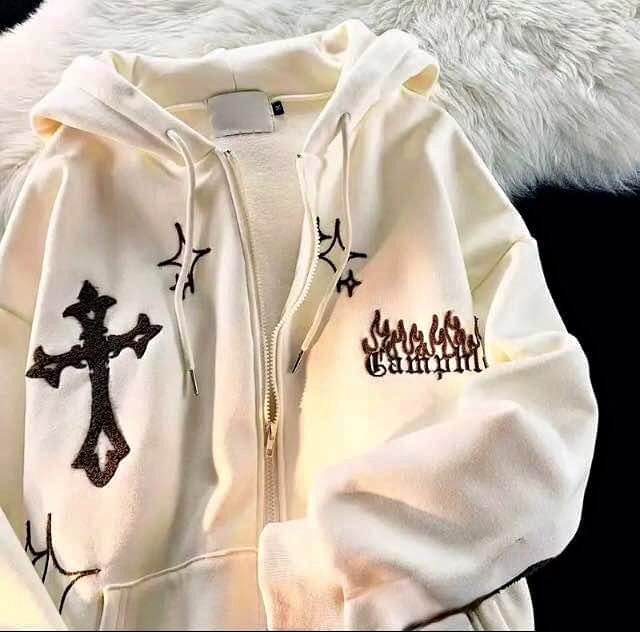
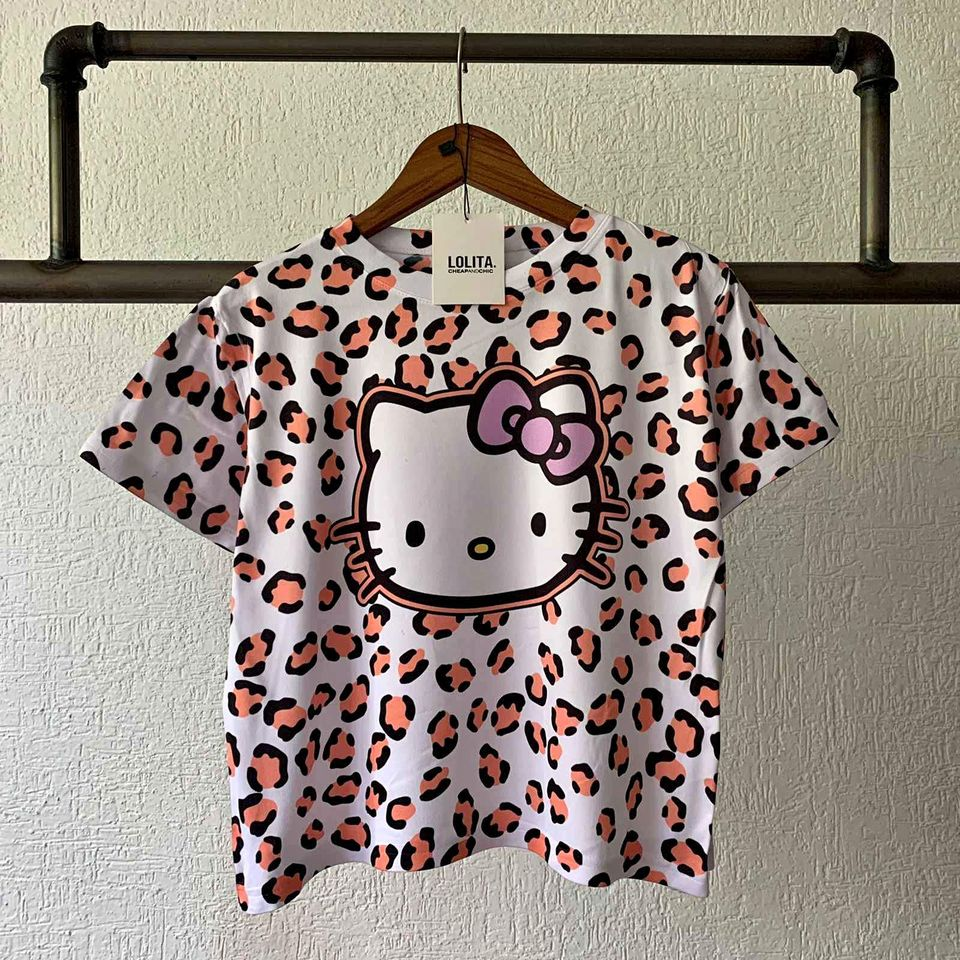

VISTE POR MENOS




¿Buscas precios accesibles, ropa en buenas condiciones y de diversas tallas?
¡No pierdas esta oportunidad de renovar tu guardarropa a precios increíbles. Visita Viste Por menos hoy mismo y sorprendete con los precios y diversas prendas de ropa que hay para ti!
Respecto a este sitio: Lo que hacen estas autoras es combinar varios puntos de vista y distintas estéticas simples y fáciles de navegar en un tema con luminosidad bajo, acompañado de algunos tonos coloridos. Compaginan también diferentes técnicas digitales para realzar el contenido que se publica. El contraste de los colores de fondo con tipografías oscuras y llamativas, con tonos oscuros es un punto a destacar a la hora de hacer el contenido de esta página, ya que tiene como objetivo no estresar a los clientes con demasiados colores y mantenerlos cómodos con su visita.